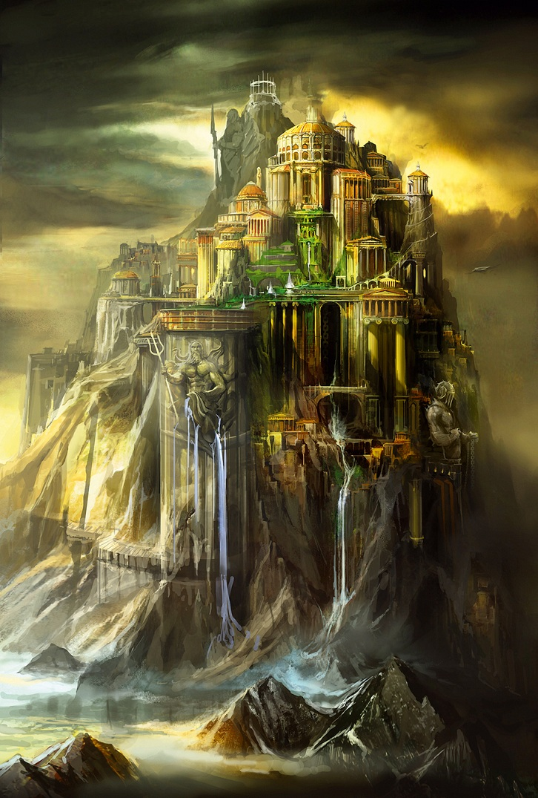
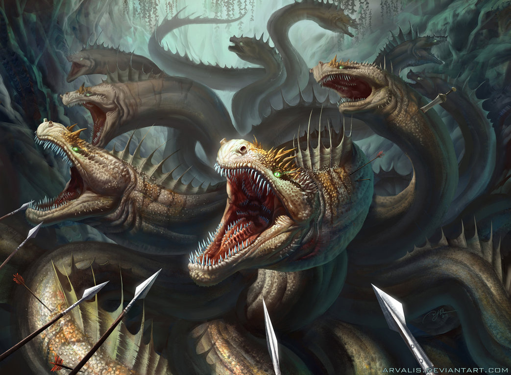
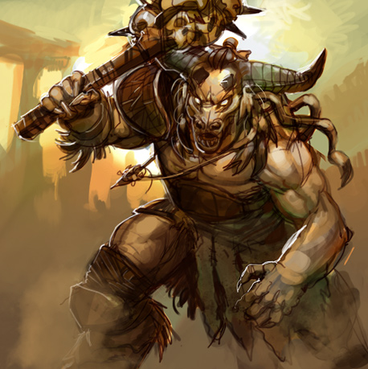
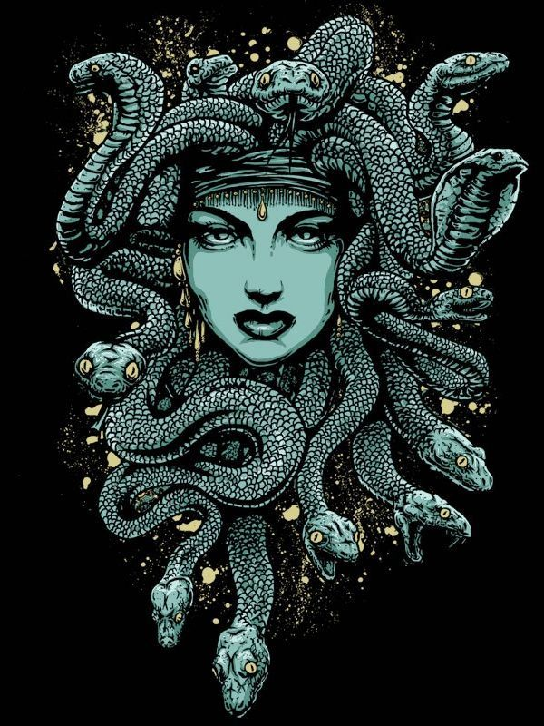

So how much do you know about Greek mythology? I can tell you now that everything I knew prior to creating this website came from the Percy Jackson novels by Rick Riordan. They certainly sparked an interest in me for the complicated mess that is Greek Mythology. The contents of this paragraph are just some general knowledge topics that will be covered more fully later on. If you decide that anything I am talking about is too basic (ha-ha) then feel free to scroll down and read further into the depth of my limited knowledge. There are 12 Olympian gods, let’s call them the major gods and every other deity is a minor god. Most of the Olympians live in Olympus. It is kind of how you would describe a heavenly abode. The 12 gods are: Zeus, Hephaestus, Poseidon, Hera, Aphrodite, Athena, Demeter, Apollo, Artemis, Hermes, Ares, and Dionysus. The nutrition the gods depend on is ambrosia and nectar, the food of the gods. It is said that if any mortal would dare feast upon the gods food they would perish. Apparently they didn’t like to share…Sometimes the gods would dine to go to the mortal world and have some fun. The product of this were demigods. Half god’s half mortals, they were blessed with incredible powers from his or her god parent and ended up slaying a lot of monsters.
Some famous Greek monsters are the Hydra, Minotaur, and Medusa.
The Hydra was a serpent with eight heads. If you were to cut one of them off, two more would grow right back in the same spot. Hercules defeated this monster with the help of the goddess, Athena.
The Minotaur was a monster that possessed the body of a man and the head of a bull. The Minotaur devoured the flesh off it’s victims. He was killed by Theseus, son of Aegeus.
Medusa is a monster with snakes instead of hair, and eyes that could turn a man to stone. She was once a beautiful maiden before she was punished by the goddess, Athena. She was killed by Perseus, son of Zeus.
Return to the top of the page